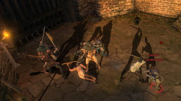
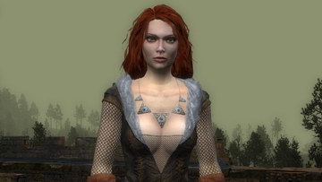
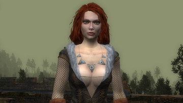
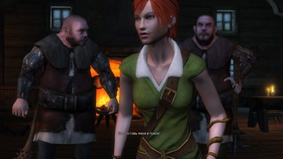
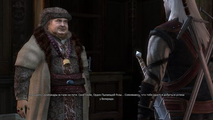

История создания
Созданное в 2002 году подразделение CD Projekt RED STUDIO польской компании CD Projekt начало
разработку «Ведьмака» в 2004 году. Разработкой сюжета игры занимались польские писатели в жанре
фэнтези Яцек Комуда и Мацей Юревич. Анджей Сапковский также принимал участие в разработке сюжета
игры. По первоначальной задумке авторов игры, главным героем должен был стать не основной персонаж
цикла романов — Геральт, а неизвестный охотник на монстров, однако позже от этой задумки авторы
отказались.
Известно, что разработчики использовали технологию motion capture для изображения движений Геральта
во время боевых сцен; в этом им помогал один из самых известных в Польше специалистов по
средневековому оружию и фехтованию Марцин Жмудский (польск. Marcin Żmudzki).
Созданием игровых роликов занималась польская пост-продакшн студия Platige Image.
В версии игры, вышедшей в США, были сильно отредактированы диалоги (в основном, была убрана грубая
лексика) и некоторые картинки из дневника главного персонажа.
16 мая 2008 года вышло улучшенное издание игры The Witcher: Enhanced Edition, которое содержит
изменённую версию игры с улучшенным геймплеем, интерфейсом и графикой, а также дополнительные
материалы.
Осторожно: Далее текст содержит детали сюжета!!!
Пролог
Каэр Морхен
Очнувшись, Геральт спускается по лестнице и видит людей, нашедших его в лесной чаще. Тех
немногих
оставшихся ведьмаков, которые близки ему, но при всём своём желании Геральт не мог вспомнить
даже их
имён. На Каэр Морхен под покровом ночи нападет группа неизвестных под предводительством двух
магов с
ужасающим на вид монстром — Химерой. По словам чародейки Трисс Меригольд, монстром управляет
маг
Саволла, однако она не знает, кто второй маг. У ведьмаков есть время обдумать следующий шаг,
но
Саволла пробивает стену, и Химера заползает в разлом. Весемир подметил, что это непростые
разбойники: у них есть особая цель и, возможно, они хотят заполучить секретные формулы
ведьмаков.

Посовещавшись, разделяемся на две группы: Трисс и Лео идут в лабораторию, ведьмаки остаются
сражаться с химерой.
Помочь Трисс остановить Саволлу
"Лаборатория — это важнее. Я пойду с Трисс". Снова идём в здание, спускаемся в
подвал.
Трисс передаст нам эликсир "Филин" — повышает регенерацию энергии. Перед нами явится
обгоревший маг Саволла. Трисс пойдёт сразу разрушать барьер, а мы остаёмся
сражаться.

Пойти с другими ведьмаками уничтожить Химеру
"С Весемиром я справлюсь с химерой". Враги ворвутся на Верхний Двор. Вскоре маг
Саволла
телепортируется отсюда, останется только химера. Она пока неуязвима, так что атакуем
бандитов. Затем знаком Аард ударяем по огромным котлам, и звоним в колокол. Когда
будут
звучать все 3 источника шума, химера станет уязвимой, атакуем её вместе с остальными
ведьмаками.
Химера повержена, Лео погиб от рук наёмного убийцы по прозвищу Профессор, враги скрылись со
знаниями
ведьмаков, Трисс без сознания. Весемир говорит Геральту рецепт лекарства для Трисс. Также он
сообщает Геральту, что нападавшие были из банды Саламандр. Уничтожив остатки бандитов и
добыв
недостающий ингредиент, Геральт отправляется к Трисс с эликсиром. Спустя некоторое время,
Трисс
очнулась. После похорон Лео ведьмаки решают отыскать и вернуть украденные свитки. Так как
Геральт
однажды спас дочь Фольтеста, Весемир говорит Геральту и Трисс отправиться в Темерию...
Помочь Трисс остановить Саволлу
"Лаборатория — это важнее. Я пойду с Трисс". Снова идём в здание, спускаемся в подвал. Трисс передаст нам эликсир "Филин" — повышает регенерацию энергии. Перед нами явится обгоревший маг Саволла. Трисс пойдёт сразу разрушать барьер, а мы остаёмся сражаться.
Пойти с другими ведьмаками уничтожить Химеру
"С Весемиром я справлюсь с химерой". Враги ворвутся на Верхний Двор. Вскоре маг Саволла телепортируется отсюда, останется только химера. Она пока неуязвима, так что атакуем бандитов. Затем знаком Аард ударяем по огромным котлам, и звоним в колокол. Когда будут звучать все 3 источника шума, химера станет уязвимой, атакуем её вместе с остальными ведьмаками.
Глава I
Окрестности Вызимы
Уставший ведьмак решает остановиться в таверне, но, не успев зайти за ворота, он видит,
как
стая собакоподобных призраков во главе со Зверем нападает на мальчика по имени Альвин с
сестрой. Геральт спасает мальчика. После этого Альвин входит в транс и непроизвольно
выкрикивает пророчество Итлины. Это замечает и Шани, давняя знакомая Геральта. Она с
радостью соглашается приглядеть за мальчиком. После непродолжительного разговора Геральт
узнаёт, что в Предместьях видели подозрительных людей со значками с фигурками в виде
саламандр, также Шани намекнула, что, возможно, про Саламандр знает Преподобный.
После небольшого отдыха ведьмак направляется к Преподобному. Служитель церкви
соглашается
рассказать о Саламандрах, если Геральт обзаведётся поддержкой трёх жителей деревни.
Ведьмаку
ничего не остаётся, кроме как выполнить поручения Одо, Микулы и Харена. Во время
выполнения
их поручений Геральт обнаруживает, как грабят краснолюда по имени Золтан. Ведьмак
спасает
своего давнего друга, но из-за амнезии Геральт не помнит его. В конце диалога Золтан
зовёт
Геральта выпить со старым другом. Геральт рассказывает Преподобному о выполненных
поручениях
и заручается его поддержкой, но тот, в свою очередь, хочет извлечь больше выгоды от
союза с
ведьмаком и поручает ему избавиться от Зверя. Преподобный рассказывает, что сначала это
задание предназначалось другому ведьмаку по имени Беренгар, однако он не выполнил его и
скрылся бесследно.
Находясь в Предместье, Геральт узнаёт, что в Вызиме карантин, и пройти в город можно
лишь с помощью грамоты, подписанной королём Темерии. По совету Преподобного по изгнанию
Зверя, Геральту не удаётся избавить деревню от пса-призрака. Ведьмак решает использовать
свои методы и отправляется к местной знахарке Абигайл. Она приняла к себе Альвина и,
обнаружив в нём способности к магии, начинает ознакомлять его с необычным даром. Абигайл
решает показать ведьмаку этот дар, и Альвин снова читает пророчество, однако на этот раз
от имени Зверя. Ведьмак понимает, что Зверь — квинтэссенция всех грехов и пороков
жителей деревни. Геральт возвращается в корчму и видит бандитов, окружающих Шани.
Геральт быстро расправился с ними. Шани сообщает ведьмаку, что Саламандры забрали
Альвина и других детей, чтобы продать их, переправив через пещеры в Вызиму. В пещерах
Геральт узнаёт, что чародей — Азар Явед, который скрылся вместе с Профессором, находится
в Вызиме. Ведьмаку не составило труда расправиться с саламандрами. В глубине пещер
Геральт встречает Абигайл, которая скрывается от разъярённых крестьян, ибо всё население
Предместий винит Абигайл в появлении Зверя.

Защитить Абигайл
"Заткнись ублюдок... Вы здесь все одинаково виноваты!" — Вместе с Абигайл пройдём
мимо крестьян и отправимся убивать Зверя. В бою она будет часто применять лечение на
себя и на нас, но нужно защищать её от врагов. Когда победим, нас попытаются убить
крестьяне, сражаемся с ними.
Отдать её толпе крестьян
"Ты прав, Преподобный..." — Крестьяне будут готовить ведьму к сожжению, она
проклянёт нас. В битве со Зверем нам будут помогать трое уважаемых крестьян, но
помощь от них только в том, что они отвлекают мелких врагов на себя. После победы
подойдёт Преподобный и поинтересуется о смерти Зверя, ответив нормально, получим от
него пропуск, или же можем нагрубить, и забрать пропуск с мёртвого тела
Преподобного.
Возвращаемся в таверну за Шани. Вместе с ней идём в Вызиму через Ворота Мельника в центре.
Шани
останется позади, идём к Микуле, показываем пропуск. Он попросит извинения за содеянное, а
потом
сдаст нас своему сержанту. Нас окружат и посадят в тюрьму.
Защитить Абигайл
"Заткнись ублюдок... Вы здесь все одинаково виноваты!" — Вместе с Абигайл пройдём мимо крестьян и отправимся убивать Зверя. В бою она будет часто применять лечение на себя и на нас, но нужно защищать её от врагов. Когда победим, нас попытаются убить крестьяне, сражаемся с ними.
Отдать её толпе крестьян
"Ты прав, Преподобный..." — Крестьяне будут готовить ведьму к сожжению, она проклянёт нас. В битве со Зверем нам будут помогать трое уважаемых крестьян, но помощь от них только в том, что они отвлекают мелких врагов на себя. После победы подойдёт Преподобный и поинтересуется о смерти Зверя, ответив нормально, получим от него пропуск, или же можем нагрубить, и забрать пропуск с мёртвого тела Преподобного.
Глава II
Храмовый квартал
Той же ночью, капитан стражи Храмого квартала — Винсент Мэйс — объявляет амнистию тому, кто
сможет убить кокатрикса в канализации. Геральт решает убить чудовище и спускается в
канализацию.
Там его встречает рыцарь Ордена Пылающей розы — Зигфрид, которого тоже послали убить
монстра.
Зигфрид предлагает свою помощь ведьмаку.
Геральт соглашается
Они вместе убивают кокатрикса. Зигфрид получает повышение и становится десятником. Он
благодарит Геральта, помогая ведьмаку беспрепятственно попасть на дамбу, представив
его
стражникам как героя.
Ведьмак говорит рыцарю, что он работает один
Позже Геральт встречает Зигфрида у дверей лечебницы Святой Лебеды, но рыцарь уже
понижен
до звания дозорного и вынужден сторожить лечебницу. Зато позволит беспрепятственно
войти
в лечебницу.

По совету Зигфрида, ведьмак идёт домой к местному детективу — Реймонду Марлоу. Разговор с
детективом был весьма полезен: Марлоу обещает разузнать про Саламандр. Взяв предоплату,
Реймонд
советует ведьмаку самому поискать подозреваемых, а также допросить раненого бойца Саламандр.
Под
подозрением находятся банкир Голан Вивальди, барыга Талер, капитан стражи Винсент Мэйс,
главарь
бандитов Могила и алхимик Калькштейн. Допросить раненого бойца не удаётся, так как его
отравляют. Реймонд утверждает, что Азар Явед будет около старой башни на болоте, поэтому они
должны срочно отправиться туда. После долгого расследования ведьмак находит ключевую улику
на
городском кладбище — тело настоящего Реймонда.
Ведьмаку становится понятно, что тот, кого он принял за детектива, никто иной как Азар Явед.
Калькштейн просит ведьмака открыть старую башню на болоте. Ведьмак добывает сефироты,
необходимые для открытия башни. Вместе с детективом Геральт отправляется к башне. Явед
принимает
свой истинный облик, а из портала появляется Профессор. В ходе драки маг признаёт, что
недооценил ведьмака и оглушает его заклинанием, скрывшись в исчезающем портале. На болотах
происходит серьёзная битва «белок» с Орденом...


Геральт соглашается
Они вместе убивают кокатрикса. Зигфрид получает повышение и становится десятником. Он благодарит Геральта, помогая ведьмаку беспрепятственно попасть на дамбу, представив его стражникам как героя.
Ведьмак говорит рыцарю, что он работает один
Позже Геральт встречает Зигфрида у дверей лечебницы Святой Лебеды, но рыцарь уже понижен до звания дозорного и вынужден сторожить лечебницу. Зато позволит беспрепятственно войти в лечебницу.
Глава III
Купеческий квартал
Очнувшись в доме Трисс, Геральт наблюдает, как она беседует с незнакомой ему чародейкой с
помощью зеркала. Трисс рассказывает ведьмаку о последних событиях. Она спасла его на болоте,
после чего началось сражение между Орденом и скоя'таэлями. Трисс просит Геральта пойти с ней
на светскую встречу, где собираются влиятельные особы, такие как Деклан Леуваарден, Талер,
принцесса Адда и её адъютант — Родерик де Ветт. Ведьмаку не по душе подобные мероприятия, но
всё же он не в силах отказать прекрасной чародейке.
Геральт заручается поддержкой Леуваардена в борьбе с Саламандрами в Купеческом квартале.
Расшифровав записку, найденную у убитого Геральтом главаря Саламандр, ведьмак и Леуваарден
узнают, что их база находится в зоне карантина, в одном из заброшенных домов. Пробравшись
через канализацию, Геральт расправляется с несколькими бандитами и магом. В центре комнаты с
помощью зеркала и магической сферы, король Редании Радовид Свирепый общается с Саламандрами.
После беседы с Радовидом, Геральт узнаёт где находится основная база Саламандр в Вызиме. Он
может заручиться поддержкой Яевина, либо Зигфрида.

Когда Геральт приходит на место встречи, внезапно врывается де Ветт со своей ратью. Трисс
мгновенное переносит Геральта в тайную пещеру Саламандр. Там же Геральт встречает своего
помощника, и вместе они бьются с Саламандрами; Явед и Профессор в это время прячутся за
порталом. Когда Явед пытается убить Геральта, срабатывает наложеное заклинание «Щит
Альзура». Явед скрывается в портале, а Профессор убегает вглубь пещеры. Ведьмак убивает
Профессора. Случается обвал.
Огромная Королева Кикимор нападает на Геральта, он убивает эту тварь и выходит из пещеры. На
выходе его встречает нанимательница Саламандр — принцесса Адда. Она зла на него и
приказывает убить. Геральт просит последнее желание — поцелуй принцессы, но ведьмаку
помогает Трисс, перенося его в Темноводье...
Глава IV
Темноводье
Геральт телепортируется на берег озера в Темноводье. Жители тех мест наблюдают появление
древнего затонувшего города. Поговорив с ними, ведьмак узнаёт, что подводные жители враждуют
с людьми. Геральт решает поговорить со жрецом и с солтысом деревни. Поговорив со жрецом
водяных, он понимает, что виной всему Дагон. Ведьмак, по просьбе Владычицы Озера,
расправляется с подводным монстром.
Богатый купец — Юлиан обвенчался с дочерью солтыса — Алиной, но Селина — сестра Алины,
убивает её, потому что сама любит Юлиана. Селина умирает от руки Адама, который любил Алину.
Одна сестра становится полуночницей, другая — полуденницей. Геральт берётся за нелёгкое
задание — расколдовать сестёр. Обращаясь с местной знахаркой, ведьмак узнаёт как
расколдовать сестёр. Ведьмак собирает все части зеркала Алины и отдаёт их ремесленнику. На
поле Геральт показывает полуденице — Алине — своё отражение, но это не помогает ей. Для
полуночницы Селины, Геральт берёт у старого отшельника венок бессмертника. Пригласив своего
друга Лютика, они расколдовывают обеих сестёр.
Уже на пути к отбытию обратно в Вызиму, Геральт наблюдает в деревне происшествие. Местные
эльфы во главе со старой знакомой Геральта Торувьель берут в заложники жителей деревни.
Карательный отряд Ордена Пылающей Розы, во главе с Белой Райлой, направляется истребить
бунтующих эльфов. Пытаясь предотвратить бойню, Геральт сначала пытается уговорить Торувьель
отпустить заложников, но она не соглашается. Направляясь к Белой Райле, дабы отговорить её
не нападать на эльфов, она соглашается, но рыцари самовольно нападают на эльфов.
Геральт помогает Скоя'таэлям
Торувьель убивает рыцарей, но тогда он становится злейшим врагом рыцарей, и кузнецы
Ордена откажутся иметь с Геральтом дело.
Геральт помогает Ордену
Рыцари убивают эльфов, но тогда Яевинн делает ведьмака своим кровным врагом, и
кузнецы нелюдей откажутся иметь с Геральтом дело.
Сохраняет нейтралитет
Ведьмак покидает деревню, не вмешиваясь в бойню.
Геральт помогает Скоя'таэлям
Торувьель убивает рыцарей, но тогда он становится злейшим врагом рыцарей, и кузнецы Ордена откажутся иметь с Геральтом дело.
Геральт помогает Ордену
Рыцари убивают эльфов, но тогда Яевинн делает ведьмака своим кровным врагом, и кузнецы нелюдей откажутся иметь с Геральтом дело.
Сохраняет нейтралитет
Ведьмак покидает деревню, не вмешиваясь в бойню.
Глава V
Старая Вызима
Подплывая к Вызимской пристани, Геральт видит клубы дыма — горит Старая Вызима. На пристани
его встречает капитан стражи Винсент. Банды Скоя'таэлей вступили в ожесточённую борьбу с
рыцарями Ордена Пылающей розы. Геральт пробивается к старой Вызиме, где он встречает короля
Фольтеста. Фольтест просит ведьмака расколдовать свою дочь Адду — от проклятия похожего на
то, что когда-то уже было наложено. В благодарность за выполнение поручения короля Геральт
узнаёт, где находится укрытие Яведа.
На пути к тайному укрытию Саламандр, находящегося на болотах, граф де Ветт встаёт на пути у
Геральта. Оказывается, что именно он повторно наложил проклятие на принцессу и ведьмаку
ничего не остаётся, кроме как убить его. Зерриканский маг призывает на помощь смертоносное
чудовище — Кащея. Ведьмак убивает одно чудовище за другим, после чего убивает и самого мага.
Перед смертью Явед называет имя своего нанимателя — им был Яков из Альдерсберга. Ведьмак
отправляется в Вызиму закончить дело, начатое им в Каэр Морхене...
Эпилог
Храмовый квартал
По возвращении к Фольтесту, Геральт поведал королю о предательстве Якова из Альдесберга.
Король просит ведьмака закончить начатый магистром мятеж. На пути к Якову ведьмак встречает
Зигфрида, который ведёт за собой свору мутантов.
Передвигаясь по дорогам, они убивают несколько отрядов мутантов. Если ведьмак сохранял
нейтралитет или принял поддержку ордена, то он встретит Яевинна с его отрядом «белок».
Попасть к убежищу Якова непросто: единственный путь лежит через канализацию, место обитания
опасного монстра — Риггера. С большим трудом ведьмак побеждает монстра. В убежище мутантов
он наблюдает иную картину: большое количество крестьян пировали и развлекались, пока шла
резня. Из разговора с Яковым Геральт понимает, что он — пленник своих фантазий. Дабы Геральт
поверил Якову, он переносит его в своё видение, где сбылось пророчество Итлины. Такое
испытание было не по душе Геральту, но ловушка захлопнулась. Ведьмак пробрался на вершину
горы, где его ждал Магистр. Сразив его, появляется Король Дикой Охоты, который требует от
ведьмака душу Якова.
Ведьмак соглашается отдать душу Якова
Тогда Король Дикой Охоты уходит, говоря, что ведьмак знал магистра под другим именем.
Геральт не отдаёт Якова
После чего Король Дикой Охоты нападает на ведьмака и терпит поражение. Геральт
остаётся вооружён только серебряным мечом. «Но это же меч против монстров?» — задаёт
свой последний вопрос магистр. Ведьмак молча наносит завершающий удар...
Очнувшись, Геральт забирает украденные секреты ведьмаков и направляется за наградой к
Фольтесту. Король награждает Геральта звонким мешочком с золотом. По пути из замка ведьмак
обнаруживает убитую стражу. Геральт бежит в тронный зал и вступает в схватку с таинственным
убийцей. Геральт одерживает вверх и отрубает убийце руку. Геральт замечает у него ведьмачьи
глаза.
Ведьмак соглашается отдать душу Якова
Тогда Король Дикой Охоты уходит, говоря, что ведьмак знал магистра под другим именем.
Геральт не отдаёт Якова
После чего Король Дикой Охоты нападает на ведьмака и терпит поражение. Геральт остаётся вооружён только серебряным мечом. «Но это же меч против монстров?» — задаёт свой последний вопрос магистр. Ведьмак молча наносит завершающий удар...
Все концовки игры
1 — Нейтралитет
Воюющие стороны обескровили друг друга. Вместе со смертью Магистра Орден
потерял свою мощь. Цвет эльфийской молодёжи погиб во время сражений на улицах
Вызимы. В этой войне не было победителей. Трисс Меригольд стала советником короля, и
вместе с этим увеличилось влияние чародеек.
2 — Белки
Членам Ордена Пылающей Розы перестали доверять. Бунт нелюдей был прощен
Фольтестом, но Яевинн не признал условий перемирия. Чародейкам не удалось получить
влияние на короля Темерии.
3 — Орден
Якова из Альдерберга похоронили как героя. Нелюдей стали ненавидеть ещё
больше, чем до восстания. Произошел массовый исход эльфов и краснолюдов из городов.
Король забыл прежние ошибки рыцарей, и не стал расформировывать Орден. Новой главой
Ордена стал Зигфрид. Чародейкам не удалось усилить свои позиции при дворе Фольтеста.
1 — Нейтралитет
Воюющие стороны обескровили друг друга. Вместе со смертью Магистра Орден потерял свою мощь. Цвет эльфийской молодёжи погиб во время сражений на улицах Вызимы. В этой войне не было победителей. Трисс Меригольд стала советником короля, и вместе с этим увеличилось влияние чародеек.
2 — Белки
Членам Ордена Пылающей Розы перестали доверять. Бунт нелюдей был прощен Фольтестом, но Яевинн не признал условий перемирия. Чародейкам не удалось получить влияние на короля Темерии.
3 — Орден
Якова из Альдерберга похоронили как героя. Нелюдей стали ненавидеть ещё больше, чем до восстания. Произошел массовый исход эльфов и краснолюдов из городов. Король забыл прежние ошибки рыцарей, и не стал расформировывать Орден. Новой главой Ордена стал Зигфрид. Чародейкам не удалось усилить свои позиции при дворе Фольтеста.